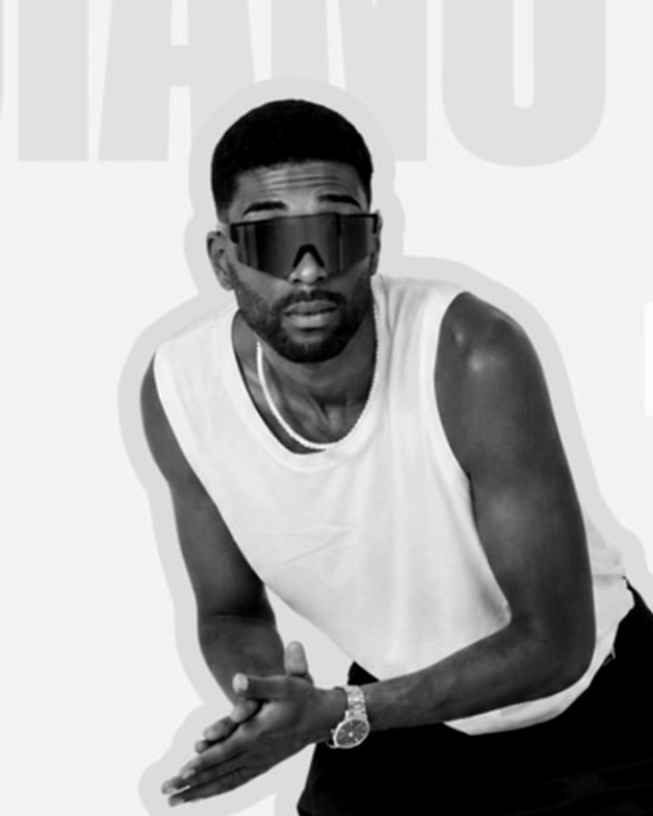

TEMPO es movimiento, aprendizaje, energía y comunidad en Castellón.
Aquí incorporaremos la historia real de TEMPO: cómo nació la escuela, cómo ha evolucionado y qué momentos han marcado su camino.
Texto pendiente de cerrar con dirección.

Director de TEMPO. Este espacio queda preparado para contar su visión de la escuela en primera persona, sin inventar su historia.
Crecer con otras personas y sentir que formas parte.
Empezar donde estás y avanzar con intención.
Constancia, técnica y compromiso con el proceso.
Encontrar una forma propia de moverte.
Entrar, moverte y salir diferente.
La música y el movimiento como lenguaje compartido.